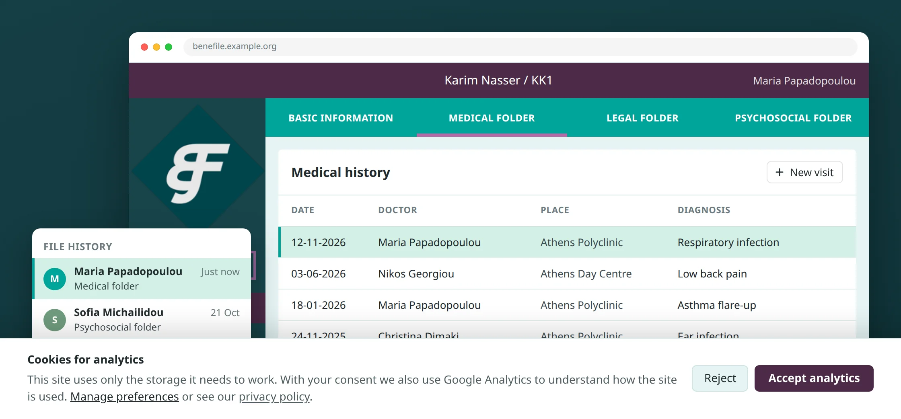
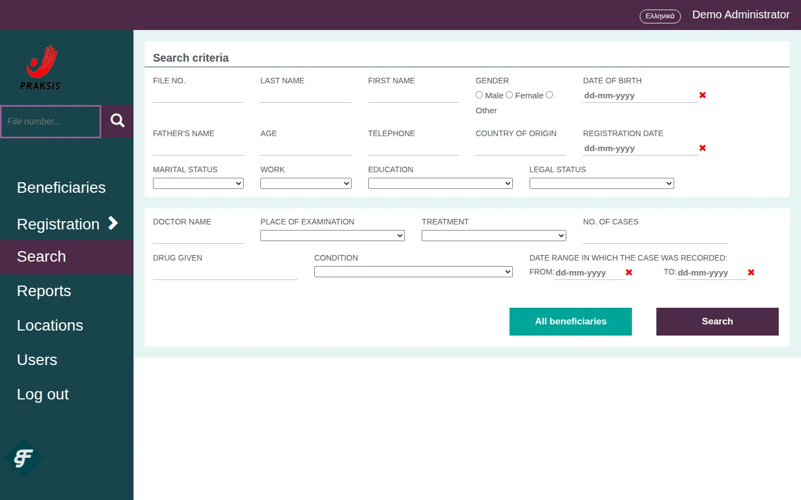
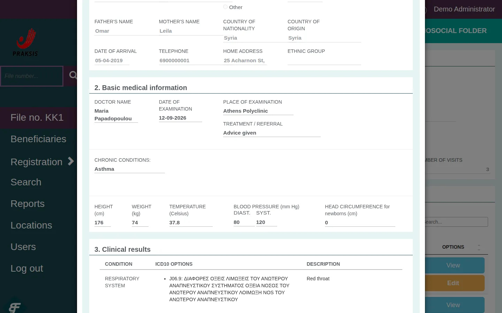
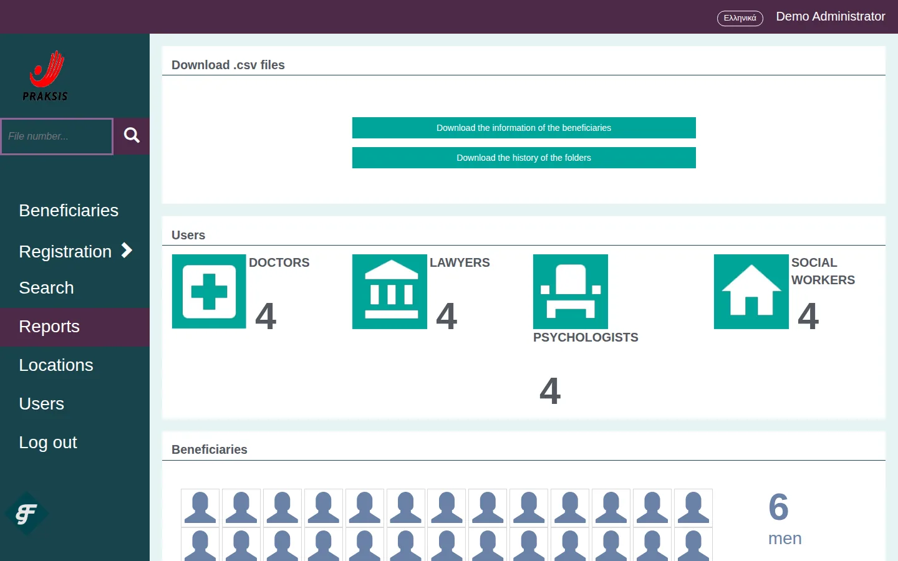
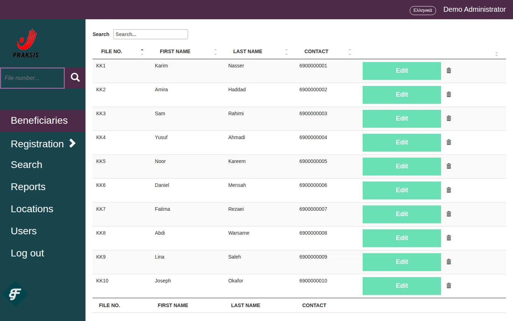
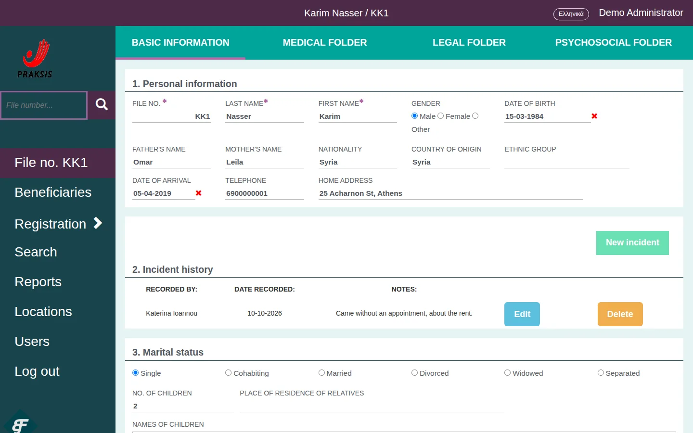
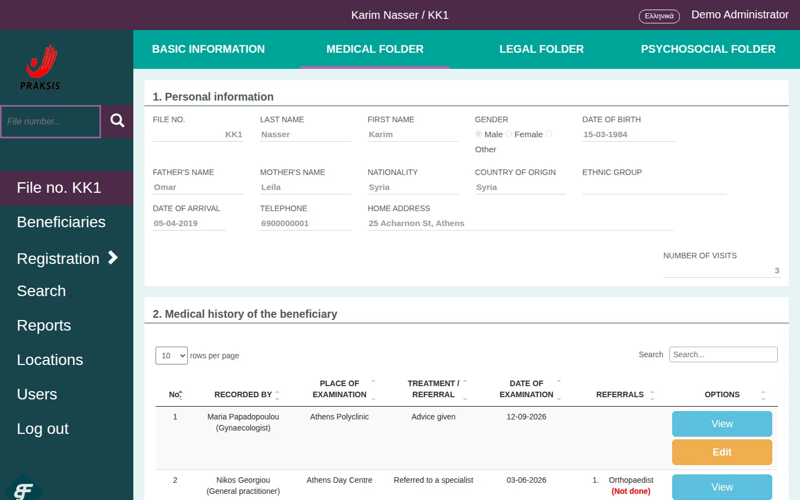
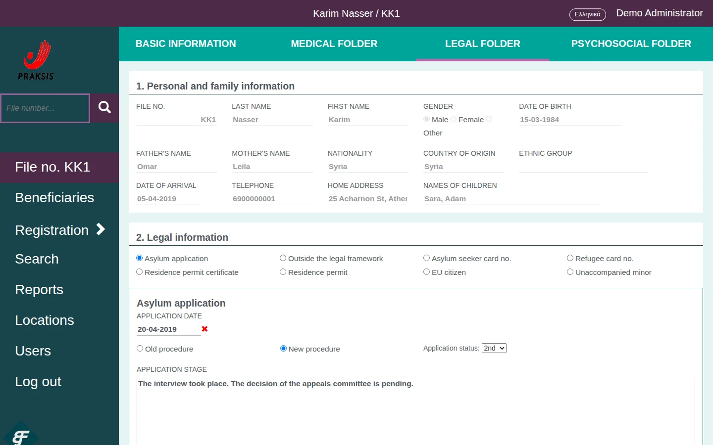
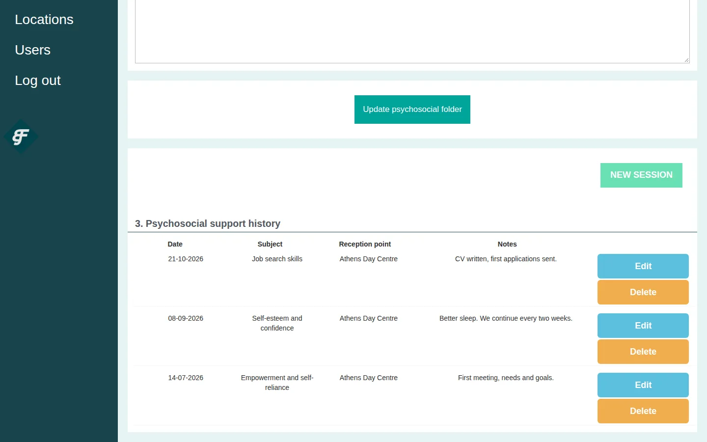
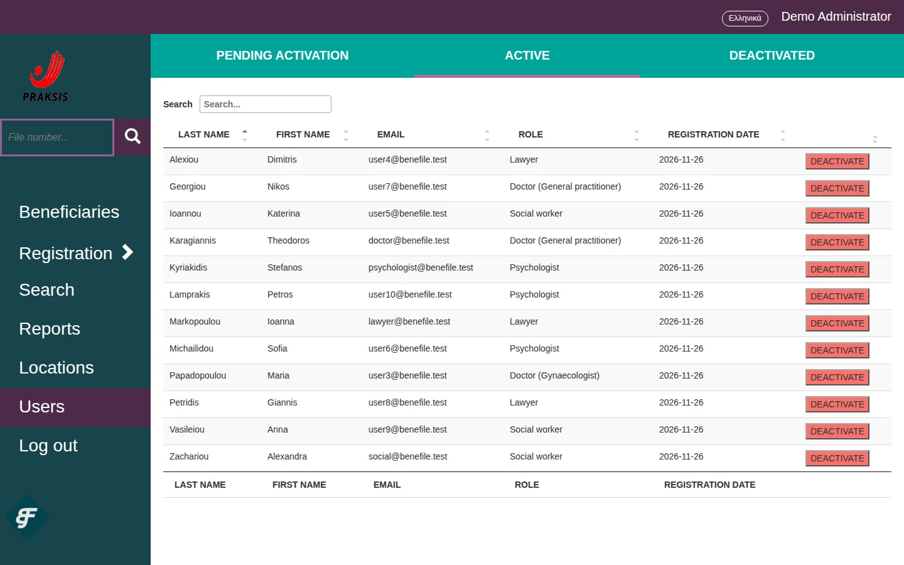

Free and open source
One digital file for every person you support
BeneFile keeps the medical, legal and psychosocial records of your beneficiaries in one place. Doctors, lawyers, social workers and psychologists work on the same file, each in their own folder.

- 4 folders
- for each person
- 5 roles
- with their own rights
- ICD-10
- diagnoses in medical visits
- Reports
- charts and CSV export
- Apache 2.0
- free to use and change
Why BeneFile
Less paper, more time for people
NGOs give medical care, legal advice and psychological support to people in need. To do this well, they must know who they help and what they did for them. Many cannot pay for a computer system, so they use paper: folders, rooms to keep them, and hours to write the same history again.
-
One file for all your offices
Your offices, units and professions open the same file. A person who goes to another office does not tell their story again. This is important for people who move often, for example refugees.
-
Numbers for your reports
Statistics show who you help, the problems they have and how your team helped them. Use them in your annual report.
-
More time for your work
Less paperwork means more time and money for the people you support.
Used in the field. The NGO PRAKSIS used BeneFile to record and follow the medical, social and legal support that it gave to people in detention centres. Read about the project at SciFY.
One file, four folders
Everything about a person, in one place
Each beneficiary gets a file number. The whole team sees the basic information. Each profession records its own work in its own folder.
-
Basic information
- Personal and family details
- Languages and need for an interpreter
- Legal status, education and work
- Referrals to other services
- A check for possible duplicates
-
Medical folder
- Medical visits, with place and doctor
- Vital signs: height, weight, temperature, blood pressure
- Diagnoses with ICD-10 codes
- Medication, with dosage and duration
- Lab results, hospital stays, referrals
- Files, and a print of each visit
-
Legal folder
- Asylum request and its stage
- Legal status and documents
- Actions of the lawyer
- Legal sessions, with notes
-
Psychosocial folder
- Social history
- Support sessions, by type of support
- Session notes that only psychologists and administrators see
Daily work
Made for busy teams
Find a person in seconds
Type a file number in the menu, or search with many criteria together: name, age, country, legal status, doctor, place of examination, condition, medication, dates.

Every visit, complete
A medical visit keeps the doctor and place, the vital signs, the diagnoses with ICD-10 codes, the medication, the lab results and the files. Open any past visit from the history, or print it.

See the whole picture
The reports page shows the team and the people you support at a glance: by gender, marital status, education, place, doctor, condition, and visits and registrations per month.
Download all the files, or the history of all the work, as CSV, and import beneficiaries from a CSV file.

Teams
Each role does its own work
New users register, and an administrator activates them with their role. A user who leaves can be deactivated: their work stays in the files.
- AdministratorsActivate users, manage places of examination, and can delete records.
- DoctorsAdd and change medical visits. Each doctor has a specialty, for example paediatrician or gynaecologist.
- LawyersKeep the legal folder and the legal sessions.
- Social workersKeep the social history in the psychosocial folder.
- PsychologistsRecord support sessions, with notes that only they and administrators see.
Screens
See BeneFile at work
The interface is in Greek and English. Select a screen to see it full size.

BeneficiariesThe list of all files, with search and sorting. 
Basic informationPersonal and family details, legal status, referrals. 
Medical folderAll the medical visits of a person. 
Legal folderLegal status, asylum request and its stage. 
Psychosocial folderSocial history and support sessions. 
UsersUsers to activate, active users and deactivated users.


The screens show example data. The names are not real people.
Get started
Install it on your own server
BeneFile is a web application. You install it on a server of your organisation, so the records of the people you support stay with you.
-
Get the code
BeneFile is a Laravel application. It needs PHP 8.3 or later and MySQL 8.
git clone https://github.com/scify/Benefile.git cd Benefile composer install --no-dev --optimize-autoloader -
Set it up
Make a
.envfile from.env.example, with your database, your mail server, and the name and logo of your organisation. Then create the tables, the lists of values and the first administrator.php artisan key:generate php artisan migrate --seed --force php artisan benefile:create-admin -
Invite your team
Your colleagues register at
/auth/register. An administrator activates each one with their role.
Before you use it with real data. Health and legal records are sensitive data: use HTTPS, keep backups, and install the security updates of Laravel and PHP. The installation guide has the details.